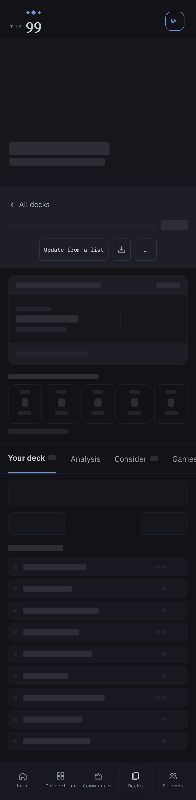
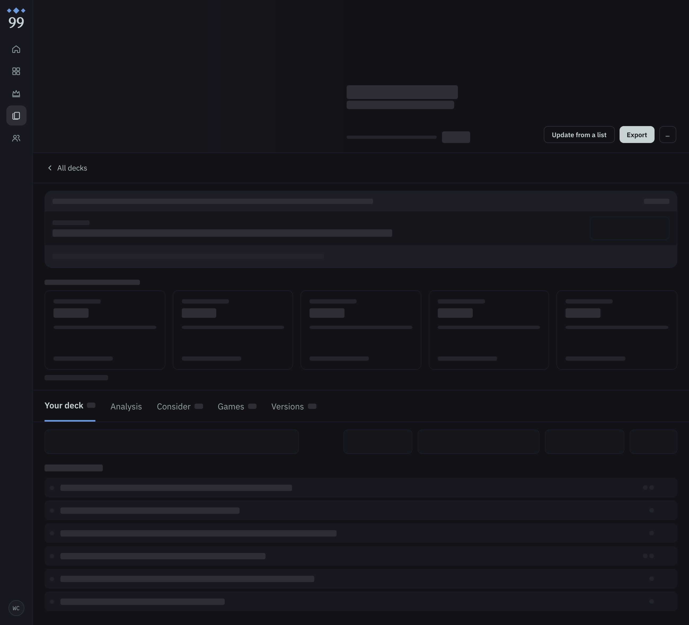

Every open of your own deck draws it, not only a flip. From Decks or Home the tile already holds the header, so A draws (as on the A board). A link or a reload has nothing in hand: B’s header, and the strip row is held with ‹ All decks until the place in the list is read.


From Decks: A, strip with its place (the tile writes the list, as today).
From Home or anywhere a deck tile shows: A; the strip’s count and arrows land with the page.
A link, a reload, a notification: B, as drawn here.
Unchanged: precons, friend decks and the deck’s other routes (Changes, Import) keep their own loading screens.